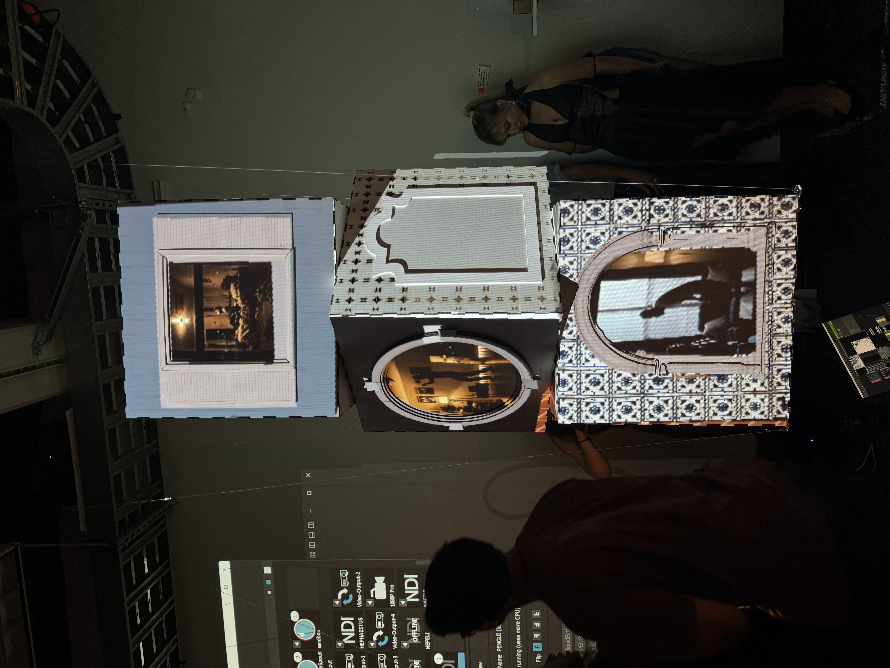
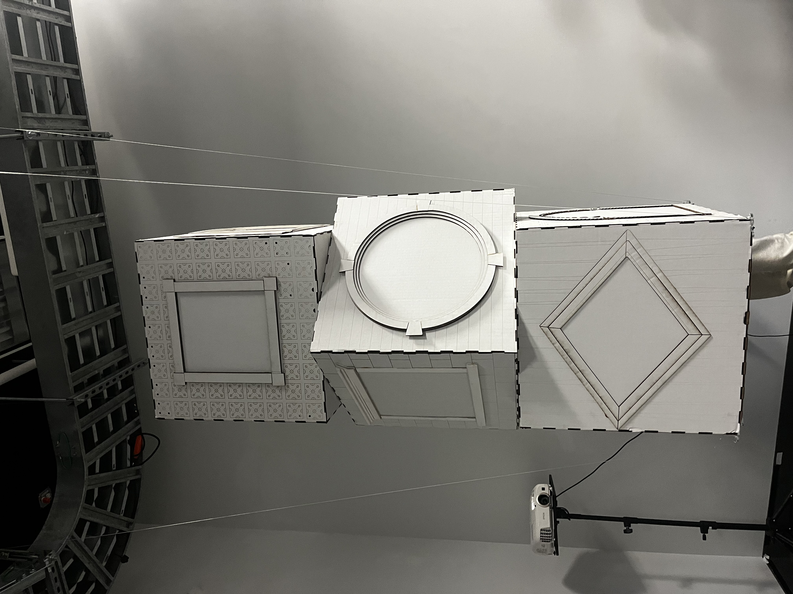
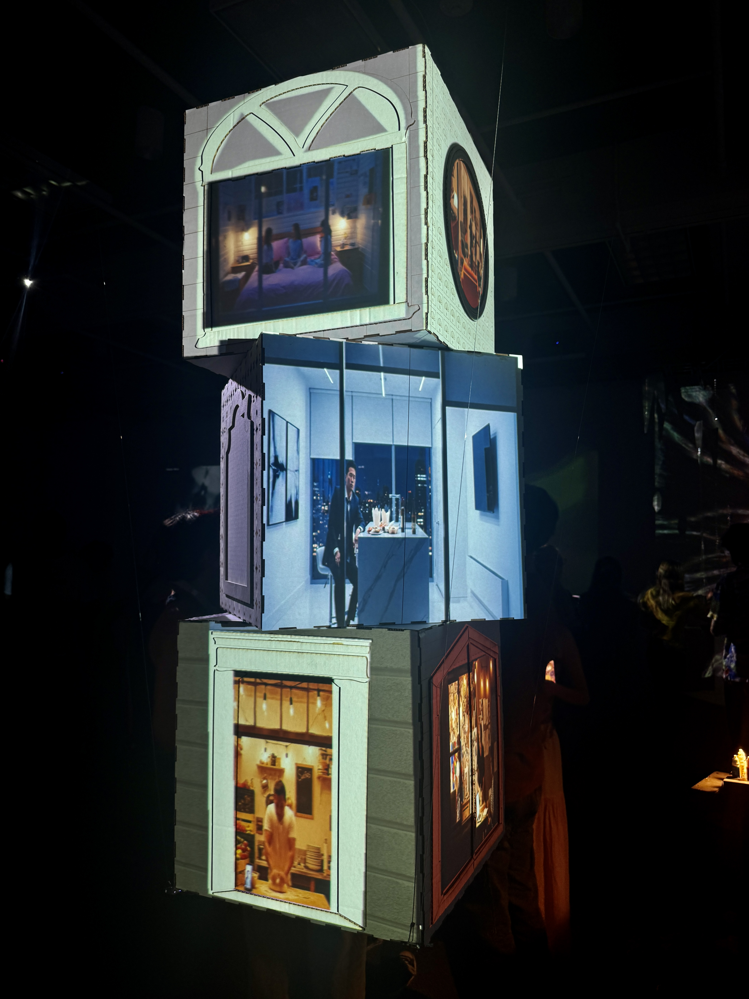
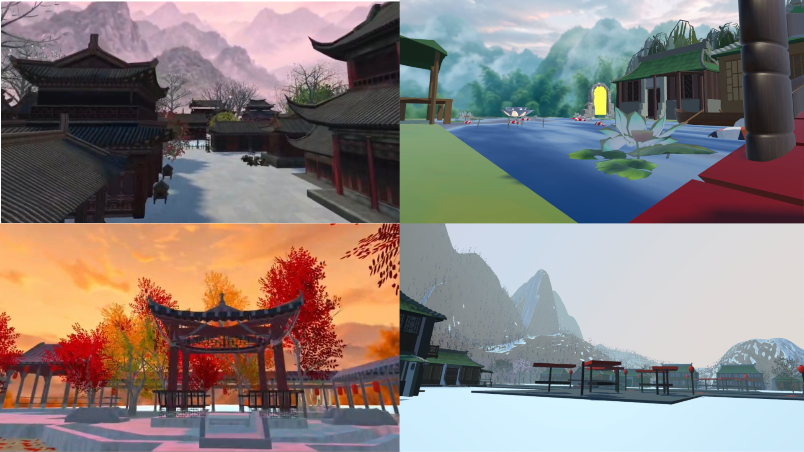

Mixed Media Installation
The Stranger Through The Window



“The Stranger, Through the Window” is an immersive installation made up of three suspended cubes, each designed to resemble the windows of a residence. Every “window” acts as a portal into someone else’s personal space — twelve unique stories that reflect different emotions, cultures, and socioeconomic realities.
The project invites viewers to reflect on the mystery of others’ lives. Viewing this piece is meant to remind us that while we are one in 8 billion, each person carries their own challenges, joys, and perspectives. What we see on the outside often doesn’t capture the reality within.
Design & process: cubes built from white cardboard and painted wood. Textures were custom building patterns coded in Processing (bricks, tiles, wood panels). Window frames were created in Adobe Illustrator using image tracing and layered depth. Digital textures were generated with AI and projection-mapped using MadMapper and two projectors. Video scenes were AI-generated using Google VEO, alongside real-time interactive video in TouchDesigner that viewers could warp and control.
This was a truly collaborative and experimental process, combining coding, AI, digital media, and design to create a work that asks us to pause and consider the hidden worlds around us.
XR World Experience
Seasoned

SEASONED is a four-season VR experience built in Unity for Meta Quest 3, guiding players through a Jiangnan-inspired water village as it transforms across spring, summer, autumn, and winter. Each season is a distinct Unity scene with its own environment, lighting, and interactive puzzle, with progression gated behind a hand-tracked object-collection mechanic that unlocks a portal to the next season.
I designed and built the environment of the Autumn scene. Warm orange-red tones surround the player. The map is populated with trees rendered in vibrant red, orange, and yellow foliage alongside traditional Jiangnan architectural structures, bridges, and courtyards. I implemented the season's core interaction, guiding the player through a courtyard structure to locate a floating flower using Meta Quest 3's hand-tracking, which then unlocks a golden portal on the bridge leading into the next scene. The result balances atmospheric world-building with intuitive VR interaction that keeps players exploring rather than following explicit instructions.